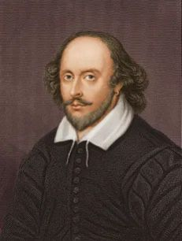
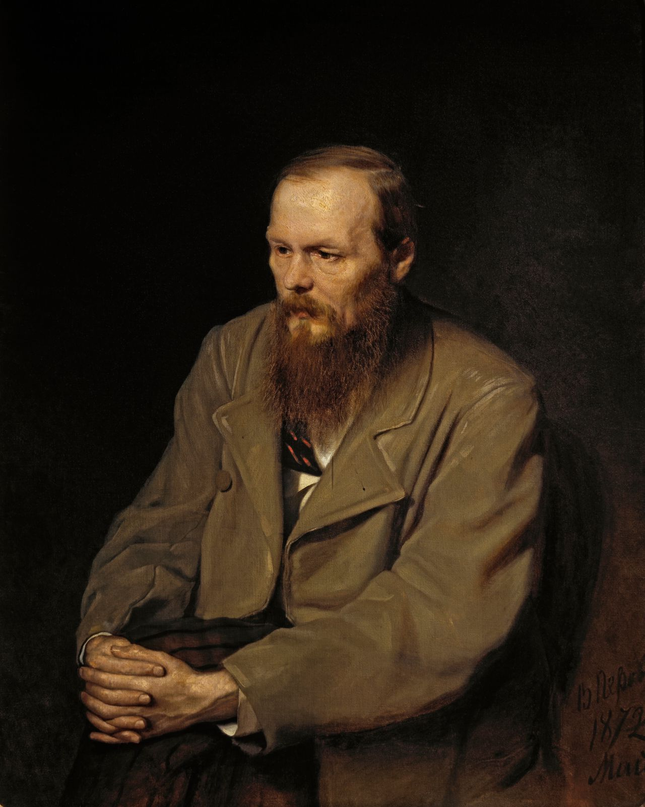
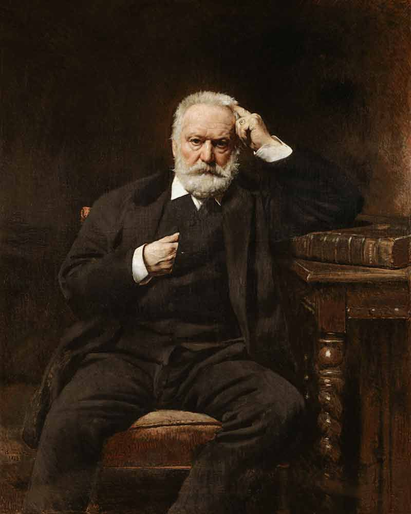
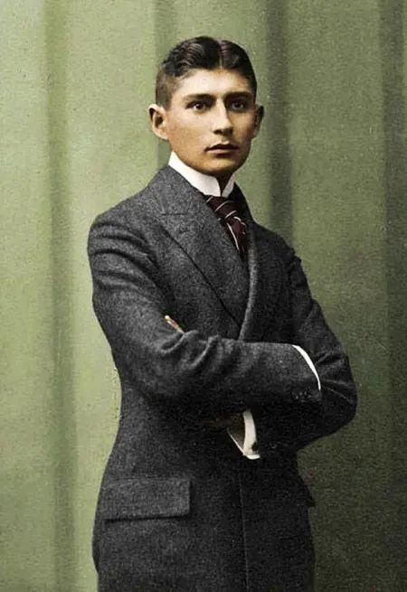
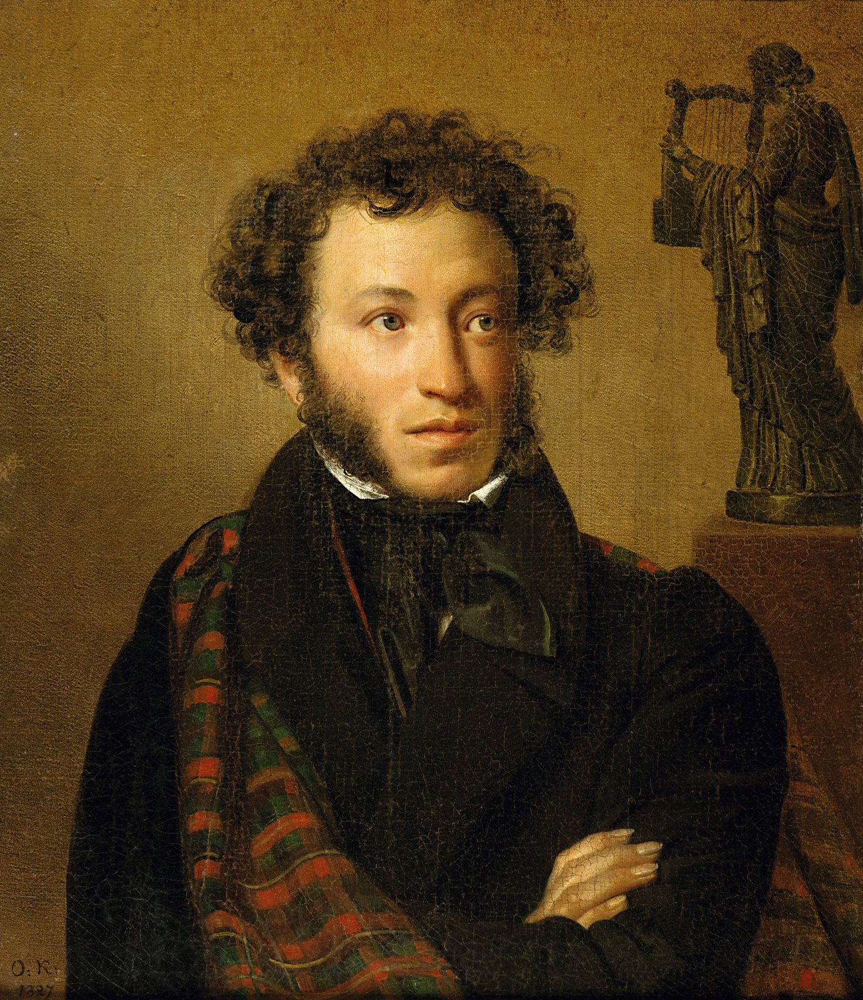
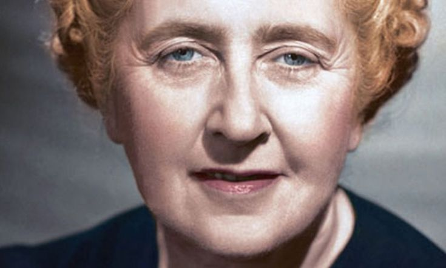

William Shakespeare
Among his most importint works are:
- Romeo and Juliet in 1594-1595.
- Romeo and Juliet in 1594-1595.
- Grinding without grinding.
- Winter Tale (play).
Year:
52-51
"Love all, trust a few, do wrong to none"
Fyodor Dostoyevsky
Among his most importint works are:
- Crime and Punishment.
- The white Nights.
- the Eternal husband.
- Notes from the underground
Year: 1821-9-nov
"Pain and suffering are always inevitable for a large intelligence and a deep heart. The really great men must, I think, have great sadness on earth"
Victor Hugo
Among his most importint works are:
- Les miserables.
- Nictor Hugo.
Year: 1885-may-22
"Even the darkest nigt will end the sun will rise"
Franz Kafka
Among his most importint works are:
- Verwandlung.
- Ein Landarzt.
- Die verwandlung.
Year: 1883-6-march
"A book must be the axe for the frozen sea within us."
Alexander Pushkin
Among his most importint works are:
- i loved you.
- dubrovsky.
- winter morning (pushkin poem).
- the prophet
Year: 1837-February-10
"A deception that elevates us is dearer than a host of low truths"
Agatha Christie
Among his most importint works are:
- The Secret Adversary.
- The Secret of Chimneysm.
- The Seven Dials Mystery.
- Lord Edgware Dies
Year: 1976-January-12
"One doesn't recognize the really important moments in one's life until it's too late."